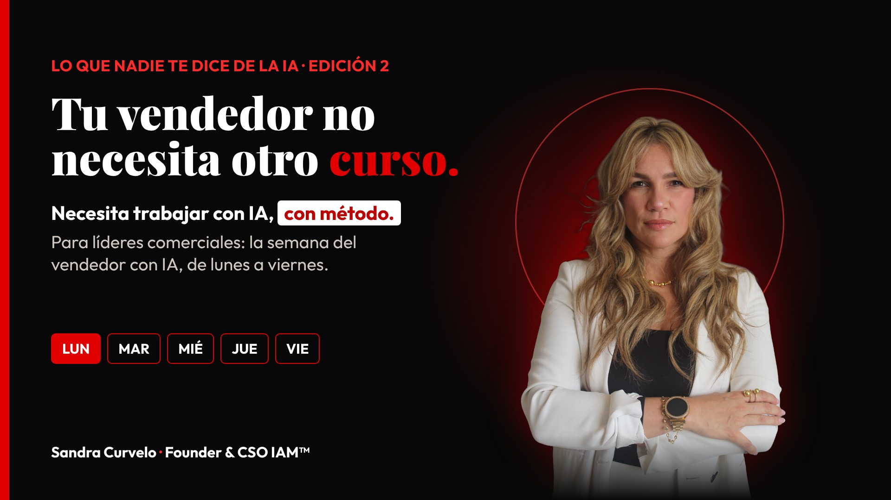
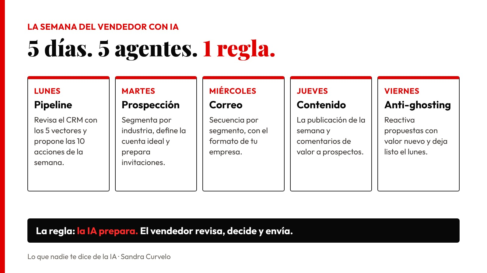
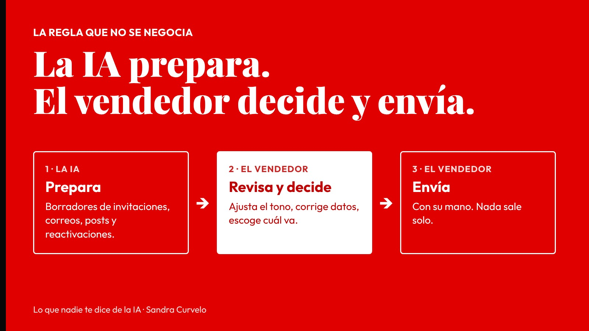
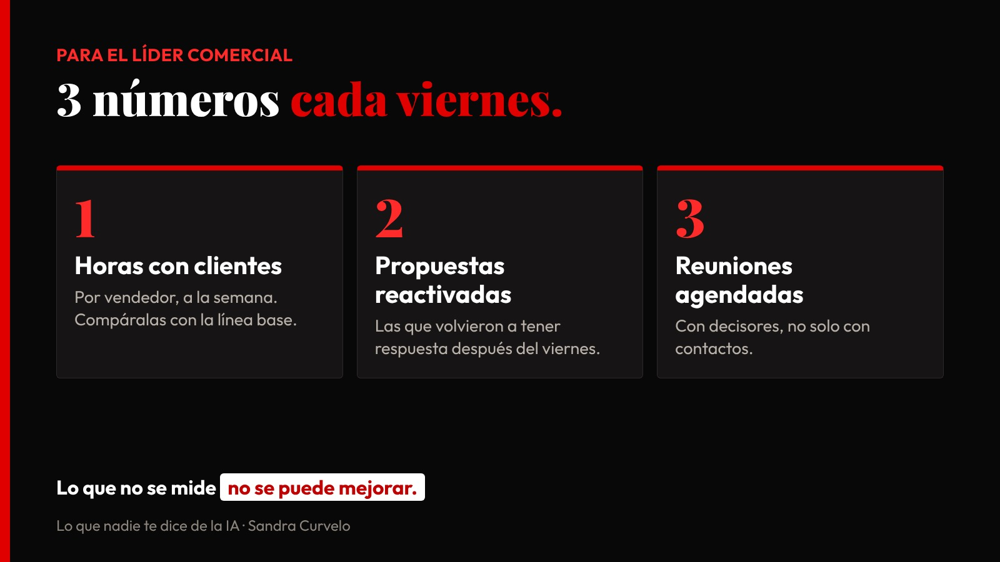

Lo que nadie te dice de la IA · Edición 2
Tu vendedor no necesita otro curso. Necesita trabajar con inteligencia artificial, con método.
Sandra Curvelo · Founder & CSO, IAM™
Lunes, 8 de la mañana. Tu vendedor abre el computador y piensa: "¿y ahora yo qué hago?".
Viernes, 5 de la tarde. La propuesta que envió hace 2 semanas sigue sin respuesta. El cliente desapareció.
En las mentorías con equipos comerciales veo estas 2 escenas cada semana. Y casi siempre la respuesta de la empresa es la misma: otro curso.
Después de mentorear a más de 1.500 personas, te digo lo que casi nadie le dice a un director comercial:
Tu vendedor ya sabe vender. Lo que le falta es tiempo y un método para trabajar con la IA cada día.
Esta edición es para ti si lideras un equipo comercial. No para que tu vendedor aprenda otra herramienta, sino para que tú le instales un sistema de trabajo.

5 días. 5 agentes. 1 regla.
1. Lo que nadie te dice: tu equipo no tiene un problema de conocimiento, tiene un problema de tiempo
Salesforce encuestó a 4.050 profesionales de ventas para su informe State of Sales 2026. El dato que más me quedó: el vendedor promedio dedica el 40% de su tiempo a vender. El resto se le va en informes, el CRM, correos y cotizaciones.
Hazle la cuenta a tu equipo: de cada 10 horas que pagas, 6 se van en tareas que no son vender.
Un curso no le devuelve ni una de esas horas.
La capacidad clave: antes de comprar cualquier herramienta, mide la línea base. Pídele a cada vendedor que anote durante 1 semana en qué se le van las horas. Luego pásale esa lista a la IA:
"Actúa como director comercial con experiencia en productividad. Te pego cómo repartió su semana mi equipo de [número] vendedores: [pega aquí]. Agrupa las tareas en 4: vender, preparar, reportar y perseguir respuestas. Dime cuáles 5 tareas se pueden preparar con IA y cuántas horas a la semana suman. Usa solo los datos que te pego, no inventes."
Lo que no se mide no se puede mejorar. Y la IA no es la excepción.
2. Lo que nadie te dice: la IA sin método se queda en el chat
Lo más probable es que tu vendedor ya use alguna IA. El problema es que la usa como buscador: pregunta, copia y cierra. Y el lunes vuelve la hoja en blanco, porque no sabe qué pedirle cada día.
La capacidad clave: un agente por día. Así se ve la semana que propongo:
⭕ Lunes, agente de pipeline: revisa el pipeline que exportas del CRM, marca los negocios en riesgo y propone las 10 acciones de la semana.
⭕ Martes, agente de prospección: segmenta por industria, define la cuenta ideal y prepara las invitaciones en LinkedIn con nota personal.
⭕ Miércoles, agente de correo: redacta la secuencia de correos por segmento, con el formato de tu empresa.
⭕ Jueves, agente de contenido: prepara la publicación de la semana y los comentarios de valor en los posts de los prospectos.
⭕ Viernes, agente anti-ghosting: encuentra las propuestas sin respuesta, redacta la reactivación con algo de valor nuevo y deja listo el lunes.
El lunes es el día más importante, porque es el que mata la hoja en blanco. Yo le pido al agente que revise cada negocio con los 5 vectores que reviso en toda reunión inicial: presupuesto, tomadores de decisión, competencia, forma de compra y tiempo.
"Actúa como gerente comercial. Te pego mi pipeline: [pega la exportación del CRM o el Excel]. Para cada negocio dime cuál de estos 5 vectores no tengo claro: presupuesto, tomadores de decisión, competencia, forma de compra y tiempo. Marca los que llevan más de [número] días sin avance y proponme las 10 acciones de esta semana, en orden de impacto."
3. Lo que nadie te dice: el agente no lo arma el vendedor, lo instala el líder
Si cada vendedor inventa su propio prompt, tienes 10 formas distintas de trabajar y ninguna se puede medir.
La capacidad clave: un proyecto del equipo comercial con las instrucciones de cada día, el formato de tus correos, tu propuesta de valor y tus casos. En Claude y en ChatGPT se llama así, proyecto: un espacio de trabajo con sus propias instrucciones y archivos. En Claude, los planes Team y Enterprise permiten compartirlo con los miembros de tu organización; en ChatGPT también se puede compartir con tu equipo.
Video: la semana del vendedor con IA, en un tablero (32 s). Datos de ejemplo.
Y la regla que no se negocia, también aquí:
La IA prepara. El vendedor revisa, decide y envía.
Ninguna invitación, ningún correo y ningún mensaje sale solo. En cada envío están en juego tu marca y tus clientes.

La IA prepara. El vendedor decide y envía.
4. Lo que nadie te dice: el ghosting no se cura con "¿pudiste revisar la propuesta?"
Cuando un cliente deja de responder, el reflejo es escribirle lo mismo con otras palabras. Ese mensaje le dice al cliente que no tienes nada nuevo que decir.
La capacidad clave: el agente del viernes reactiva con valor nuevo: un dato de su sector, una pregunta sobre uno de los 5 vectores o una opción más pequeña para empezar.
"Te pego la propuesta que le envié a [cargo] de [tipo de empresa] el [fecha] y lo que hablamos en la reunión: [pega aquí]. Lleva [número] días sin respuesta. Redacta 3 mensajes de reactivación de máximo 4 líneas, cada uno con algo de valor nuevo: un dato de su sector con fuente, una pregunta sobre [presupuesto, decisión o tiempo] o una opción más pequeña para empezar. Sin presionar y sin preguntar si ya la revisó. Yo escojo uno y lo envío."
Y como líder, cada viernes mira 3 números de tu equipo:
⭕ Horas a la semana en conversaciones con clientes
⭕ Propuestas reactivadas
⭕ Reuniones agendadas

3 números cada viernes.
Si esos 3 números no se mueven, no es culpa de la IA: el método no se está usando.
Prompts para que tu equipo empiece el lunes
Cambia lo que está entre [corchetes] y pégalo en cualquier IA. Los del lunes y el viernes ya están arriba.
Martes, prospección:
"Actúa como experto en prospección B2B en [país]. Mi cliente ideal es [cargo] en empresas de [industria] con [tamaño]. Dame 3 segmentos, las señales en LinkedIn que muestran que una cuenta está lista para conversar y una nota de invitación corta para cada segmento. Yo reviso y envío cada invitación."
Miércoles, correo:
"Actúa como redactor comercial. Te pego el formato de correo de mi empresa y nuestra propuesta de valor: [pega aquí]. Escribe una secuencia de 3 correos para [segmento]: el primero abre con un problema de su sector, el segundo comparte un caso o un dato con fuente y el tercero propone una reunión de 20 minutos. Máximo 120 palabras cada uno. No inventes cifras ni clientes."
Jueves, social selling:
"Actúa como estratega de social selling en LinkedIn. Vendo [tu solución] a [cargo]. Proponme 1 publicación para esta semana con esta historia real: [cuéntala]. Luego, con estos 3 posts de prospectos [pega aquí], redacta un comentario de 3 líneas para cada uno que aporte un dato o una experiencia, sin vender. Yo los reviso antes de publicarlos."
En conclusión
Tu vendedor no necesita otro curso. Necesita trabajar con inteligencia artificial, con método.
El curso enseña. El método se queda: qué prepara la IA cada día, quién revisa y qué se mide el viernes.
Y la regla de oro de siempre: la IA hace el trabajo pesado, pero la última palabra es de tu vendedor.
¿Lideras un equipo comercial? Armé la guía "La semana del vendedor con IA": los 5 agentes, las instrucciones para el proyecto de tu equipo y los prompts de cada día, listos para copiar.
Escribe SEMANA en los comentarios y te la envío.
Si quieres seguir viendo lo que nadie te dice de la IA, sígueme a mí y a la página de IAM™. Cada 15 días, una verdad nueva.